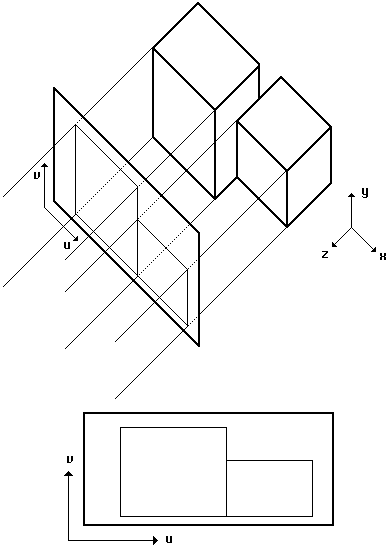

Previous
-- Next
PARALLEL PROJECTION
- Not a 'natural' way to view the 3D world (compared to perspective projection)
- Used as a design and geometric modeling tool (measurements can be taken)
- Orthographic parallel projection: projection rays are parallel and normal to projection plane (no center of projection). Commonly used: front, top, and side view
- As with perspective projection, straight lines in 3D world remain straight lines in 2D projection plane
- In addition, parallel lines in 3D world remain parallel in view plane (no perspective foreshortening)

Previous
-- Next